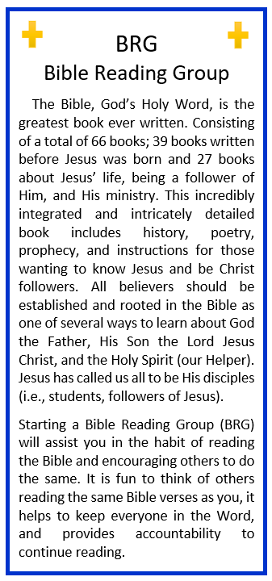
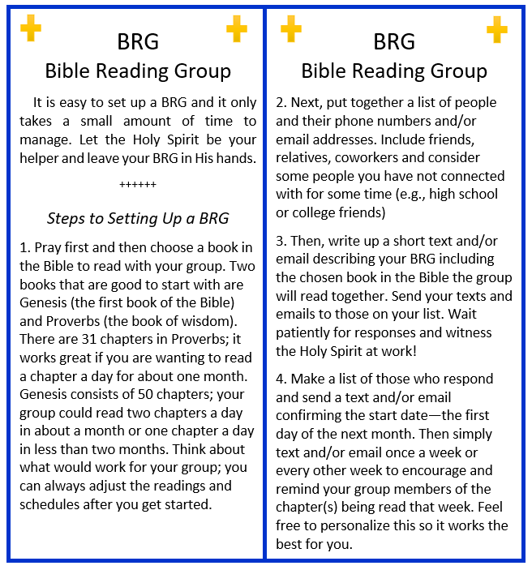

Two years to the day! Iris shook her head trying to fling the memories of that day from her mind, but it was no use. It had been her worst day and her mom’s best! Iris’ mom left this earth and stepped into eternity. It had taken Iris nearly six months to summon up the courage to enter this room, the room where she had stored the handful of things she had received that had belonged to her mom. She leaned against the doorway trying to convince herself to take a step inside. “I thought going through her clothes was hard, but this is about to break my heart,” she sighed. Iris knew her mom had been sealed for eternity since she was a young girl. When Iris was about ten years old, her mom told her how she received Jesus as Lord of her life and started a personal relationship with him. She recalled her mom telling her that it was that relationship that had gotten her through the tough and good times in life. Her mom held strong to her convictions until her day of transport from Earth to Heaven. She had commented several times that she was excited to make that trip whenever Jesus called her home. “But that did not make your leaving easy, Mom.” Iris’ brief moments of happiness, remembering their conversations, were struggling against the grief trying to keep it from stealing them away. Being with someone right before that person is ushered into Heaven is a lot easier to talk about than experience! Yes, time had passed and, on most days now, she was able to act as though she had “gotten over it.” The sting of her mom’s passing was only slightly tempered; the tug-of-war between grief and happiness continued deep inside. “Iris, you’ve got to get to work on those boxes,” she distracted herself. Iris had decided she would finally go through the last three boxes of books from her mom. One of her mom’s most loved hobbies had been reading. Even though she had spoken many times of going through and donating some of the books on her three floor-to-ceiling bookshelves, she never seemed to get around to it. “Like most of us,” Iris thought, as she cut the packing tape on the first box. A wonderful smell from Mom and Dad’s house escaped from the box, momentarily stunning Iris as it brought back memories of sitting in their living room visiting with them. She had made a concerted and willing effort to visit them at least once a month for the past ten years and had zero regrets about that. Sure, she had missed a couple of months because of work and her son’s activities, but there were very few of those that she couldn’t juggle around her schedule. Her only regret was that she wished she had made time for those visits many years earlier! “Focus, Iris!” she mindfully redirected herself. “You are too easily distracted from tasks you don’t want to complete.” The first box wasn’t what she had expected. It wasn’t filled with regular books, but with scrapbooks her mom had worked on through the years. “Hmm, Mom, when did you find the time to do this, raising four very busy children?” Iris mused, hoping for a conversation that wasn’t going to be. She pulled out three scrapbooks, each one a little scrappier than the previous one, Iris noticed. “Well, she definitely got a lot farther than I have in organizing my memories,” Iris, who to date had years of digital photos waiting to be organized, chuckled under her breath. It was the third scrapbook that caught her attention, though, probably because it had brochures sticking out of it. As she hesitantly opened the worn cover, Iris was transported again to some of her fondest memories of all, their family camping trips. Mom and Dad had made it a priority to have their children experience life outdoors, and every summer was an adventure different from the year before. Turning each page was reliving the joy of exploring God’s creation with the people she loved most. Near the back, she found several pamphlets tucked between the pages. “Oh, these are the places we camped!” Iris recalled with growing excitement inside. “It sure has been a long time since I have been camping; we even have our old camper in storage. Maybe it’s time to see what condition it’s in and start thinking about using it?” asked Iris, as if expecting a reply from the books on the shelves. Setting the scrapbooks aside so she’d remember to show them to her husband and son, Iris took a breath and gently opened the second box. After spending so much time with memories in the first box, Iris was relieved that there were great books in this box, but no surprises—her heart needed the break. It took some time to empty the box and find space on the shelves to place the books. Iris glanced at her watch, amazed that only two hours had passed; she felt emotionally drained just the same. One more box remained. “I could do this another time,” she wrestled with herself. “I’d rather do this another time. But then I would HAVE to do it at another time. Holy Spirit, give me your strength!” Iris pulled herself back to the third box. Somehow, she found the will to open it. There were seven who-done-it mysteries, four courtroom dramas, two biographies, and three “religious” books, as her mom would call them. “Religion” had become a word with a lot of baggage so Iris preferred to refer to a “religious” book as a book about Jesus and God—of course, only if that accurately described the book. One of the books was titled The Knowledge of the Holy by A.W. Tozer. Iris remembered her mom reading it first and then she read it with a women’s group from church. During that study, the book had made an impact on her and her ideas particularly concerning thinking rightly about God. Her understanding of the attributes of God had grown through the group’s discussions. Flippling through the book, Iris recalled that she had memorized the last sentence in the book, “We are left for a season among men; let us faithfully represent him here.” “Well, that certainly goes well with my walk down memory lane about Mom. Oh, how I miss her!” she silently thought. As Iris opened and flipped through the second book, a paper fell out of it. She picked it up and realized it was a tract. Now that was something she hadn’t seen since she was a kid! It was a small, front-to-back, four-page pamphlet with the title BRG. She read the front of it.
She opened the tract and continued to read.
“Hmm,” Iris pondered while flipping to the final page of the tract. There wasn’t much on it. No organization name or address to indicate who had come up with the idea or who was sponsoring the tract. There was a P.O. Box with a line indicating where to write for more copies of the tract, free of charge, of course. Iris laid the tract aside and pulled out the final book, Randy Alcorn’s Heaven, which brought back another layer of memories of her mom. When her mom had learned that she had only a few months to live, she had told Iris that she wanted her to have the Heaven book. She continued to tell her with her sweet smile that she didn’t need it anymore because she was going to be experiencing Heaven soon. “I remember trying to read that book even before Mom went home and it was a struggle for me. I should give it another try. I’ll remember to heed Mom’s words about making sure books discussing Jesus-related things are in alignment with what the Bible says about those topics,” she thought. Iris finished putting all the books on the shelves except the Heaven book. She placed that book on the seat of her Mom’s chair; she was so grateful to have received her reading chair along with the boxes of books. She placed the BRG tract inside the cover of the book and thought to herself, “I will think about a BRG, but I’m likely too afraid to risk doing something like that!”